Closing the gap between design and production
11 min read
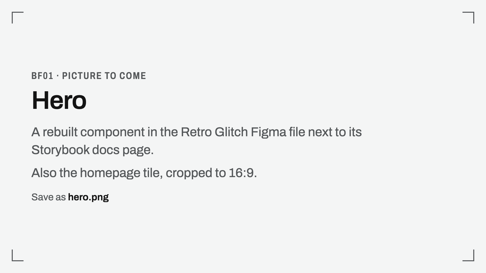
At a glance
- The problem: design and code had drifted apart. Our Figma file was a copy of GitHub Primer's community file, with broken colour ramps and components that ignored its tokens. Storybook didn't match it, and customers could see the inconsistencies.
- What I did, unassigned:
- rebuilt the token foundations
- fixed the most-used components
- designed the first AI components
- added dark and light high-contrast themes
- drafted the Storybook docs the FE team shipped
- built a prototyping repo for PMs
- started shipping my own PRs
- What it unlocked:
- the dark theme took 3 days of design work once tokens existed
- Storybook props went from 0 to 509 documented and 28% to 97% typed, with the FE team
- AI components now appear in four products
- The honest part: light high-contrast isn't shipped, and PMs haven't started using the repo yet.
The gap
Problems before
-
A borrowed design system.
We worked from a copy of GitHub Primer's Figma community file, with a tangle of primary and secondary token variables.
-
Broken colour.
The colour ramp was broken, the colour collections were skewed and colour names were far off.
-
Components ignored the tokens.
Many components didn't use the variables at all, many had spacing issues, and the icons were a mess.
-
It couldn't scale.
Advanced patterns like slots and nested components would have been a nightmare to build on it.
-
Storybook drifted from Figma.
The code library's docs deviated from the design system in many places.
-
Components with gaps:
- Button had no props for label, keyboard hint, notification indicator or loading state.
- Checkbox and radio had no hover or pressed states, and no label or caption support.
- Action menu and select panel were split into too many disjointed sub-components, so designers had to remember which piece to use where.
- Breadcrumbs had no collapsed state.
-
Missing components:
with no RadioGroup or CheckboxGroup, designers and engineers built their own with their own spacing. With no Upload component, the live products used several different upload elements. Slider, DatePicker and TimePicker were missing too.
-
No owner on the design side
and no process. On the code side, the FE lead owned the library.
Why it mattered
- Customers could see it: UI inconsistencies across components made the product look immature and unprofessional.
- It slowed my own work: the old system was frustrating and had no room to scale.
- PMs' prototypes didn't look real: PMs fed screenshots of the live product to AI tools to build prototypes. Even with the Figma file as reference, the results didn't look or behave like production.
Who it's for
- Designers and FE engineers, who build from the system.
- PMs, who prototype ideas for stakeholders.
- AI coding tools, which read the docs and guardrails.
What I took on
- No brief, no written goal. I started the design system rebuild because the old system was frustrating and couldn't scale.
- The prototyping repo came from an ask. My manager, a senior PM, asked in a 1:1 for a way to automate this design work so it helps everyone. I chose the approach and built it.
- The PRs were for my own growth, as product design builder roles gain ground.
- Constraints:
- Stay on Primer. I proposed moving off it towards LambdaTest's own visual identity, since our product and our website speak different visual languages. Leadership saw it as too big a change.
- No dedicated time. I did all of this alongside my regular deliverables, mostly in my own time.
- The code library isn't mine. The FE lead owns Storybook and LTComponents, so code changes go through her team.
- Order of work: tokens, then components, then themes, then Storybook docs, then the repo, then PRs. Components and PRs are ongoing.
How I closed it
1. Foundations first: tokens
What I did
- Rebuilt the variables into two collections:
- 243 base tokens: size, spacing, border radius and width, and colour as solids and transparent (alpha) versions across eight hues.
- plus 14 text tokens for font family, weight, size and line height
- 150 theme tokens named by purpose: text, background, icon, border, overlay and shadow, plus component tokens for keyboard hint, upload, button, text field and segmented control.
- 243 base tokens: size, spacing, border radius and width, and colour as solids and transparent (alpha) versions across eight hues.
- Down from 622 variables in 5 collections in the old Primer copy.
- Light, dark and light high-contrast are modes of the theme collection, so every theme token holds a value for each.
- Tokens live as Figma variables. They aren't wired directly to the CSS variables in code yet.
2. Fix the most-used components
What I did
- Picked by real usage: button, action menu, select panel, radio, checkbox, breadcrumbs and labelGroup, the components used most on the most-seen screens.
- Closed every component gap listed above: I designed each fix, handed it to FE, and tested it in Storybook against the intended behaviour.
- Added the missing components the same way: RadioGroup, CheckboxGroup, Upload, Slider, DatePicker and TimePicker.
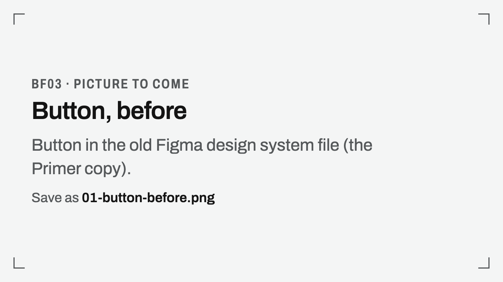
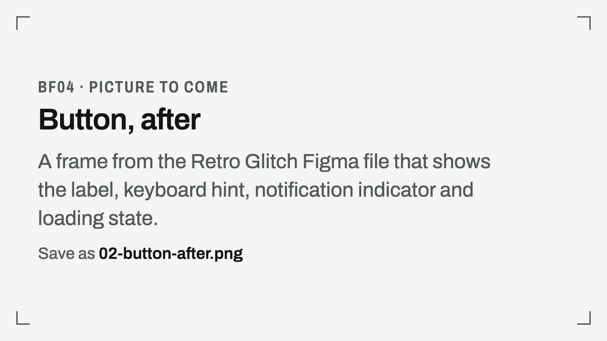
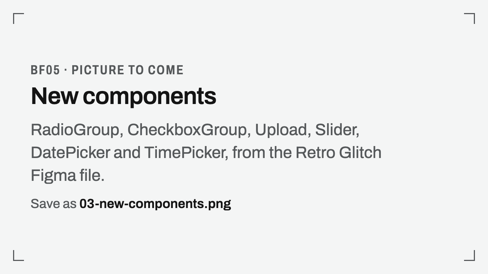
3. The first AI components
Why
- AI features were using normal components with makeshift changes, and they looked half-baked.
What I designed
- AI button, AI icon button, AI label and AI shimmering text.
- One signal for AI: a spark icon and a gradient. The gradient was the main decision; everything else comes from the normal components, so AI parts still feel like the same product.
- A usage rule in the docs: "Use ai only for AI-powered features".
Where they are
- AI button, AI icon button and AI label are standard in LTComponents and used mainly in Test Manager and KaneAI, with a little use in SmartUI and Accessibility.
- AI shimmering text isn't in the code library yet, and its motion isn't final.
What's not done
- Accessibility wasn't reviewed for the gradients. My next steps: check text contrast against every gradient stop, give icon-only AI buttons a name, keep focus visible on the gradient, and make the shimmer respect reduced motion and announce its status to screen readers.
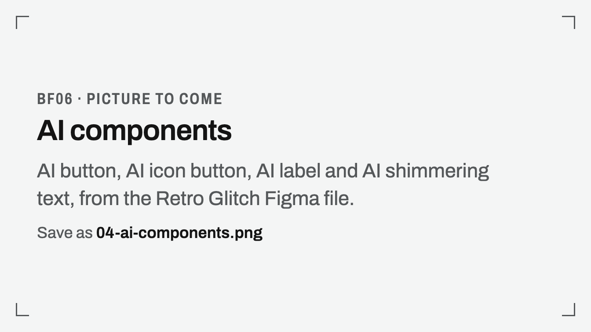
4. Two new themes
Dark theme
- I translated every colour token from light to dark, following Primer's colour guidance, in 3 days.
- Engineering spent about a month converting products to the new CSS variables and got to about 90%.
Light high-contrast
- A large enterprise customer had a custom light high-contrast theme, built earlier without tokens, so it couldn't extend to other themes.
- Now every colour token has a light high-contrast value in Figma.
- It isn't shipped yet; it's waiting for dark to go fully live. Then I'll hand engineering the values as a file to apply to the CSS variables.
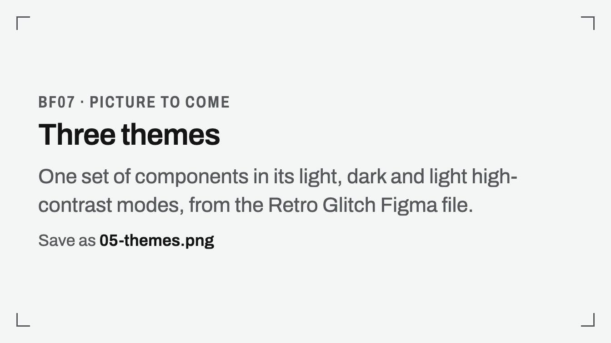
5. Storybook docs people and AI can follow
What I did
- Prop descriptions and types: I had Claude map our props to Primer's equivalents and draw on Primer's public docs, then collated the descriptions and types into JSDoc handover files. The FE lead's team applied them in Storybook.
- Dos, don'ts and guardrails, written for engineers and AI coding tools. LTButton's cover labels, sizes, a 24 × 24px minimum target, when to use inactive instead of disabled, and the ARIA rules.
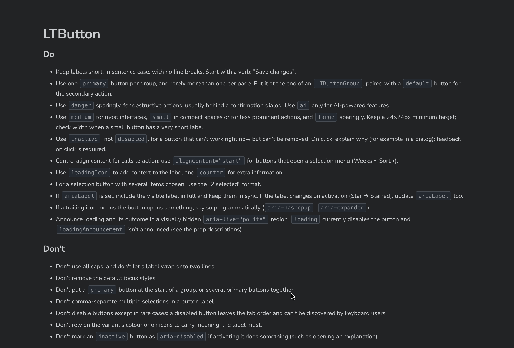
- Quirks and known issues stated plainly in the props, e.g., "Despite the name, a style object".
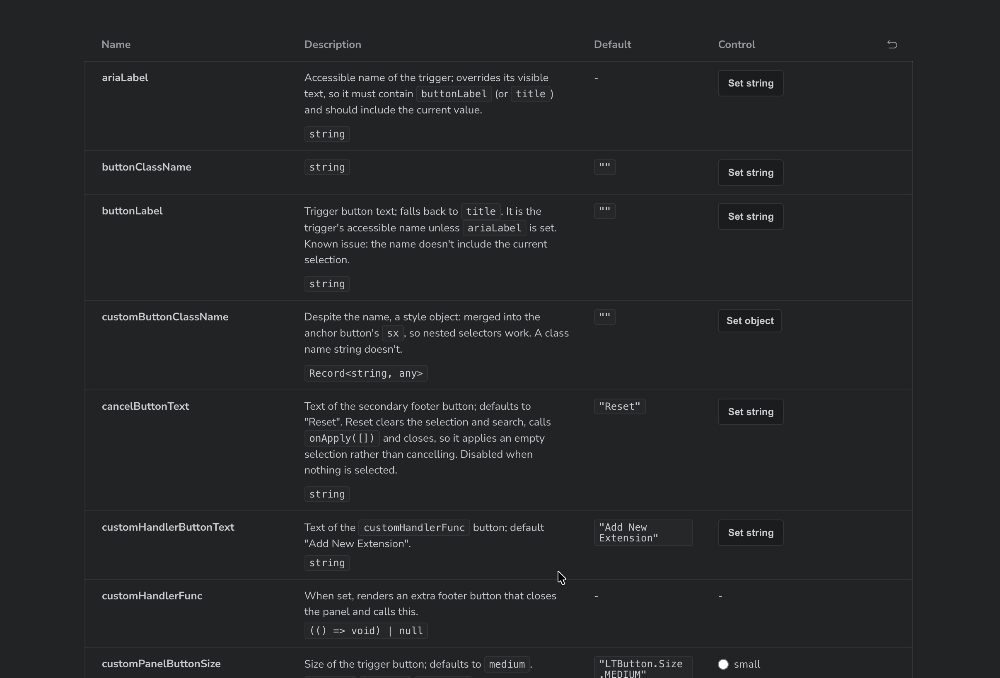
- Storybook against Figma, audited by hand: the AI model hallucinated across components and props with similar names, so I didn't trust it for this.
Result
- In the FE lead's words: Storybook props went from 28% to 97% typed and from 0 to 509 documented.
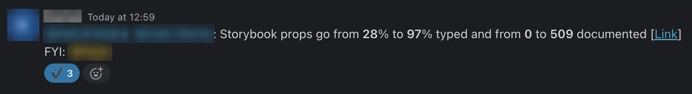
- FE engineers now use Storybook constantly and keep it updated, which wasn't the case before.
6. A prototyping repo for PMs
Before
- PMs prototyped by feeding screenshots of the live product to AI tools. The results didn't look or behave like production.
What I built
- A private GitHub repo that pulls component details from Storybook's manifest.json and index.json with a script.
- A GitHub Action that refreshes it every month, so it doesn't go stale.
- mock-data.md: realistic test management data (test case, test run and instance names, users, projects, browser and OS configurations, devices), so prototypes don't fill up with generic values.
- Screen layout patterns as code for the most common screens, so PMs don't need screenshots.
- Component guidelines and guardrails from Storybook.
- Works with Claude Code, which picks what it needs from the repo for each task.
Where it stands
- I've built a couple of Test Manager prototypes with it, and they came out well.
- I haven't shown it to PMs yet; I'm improving the output first.
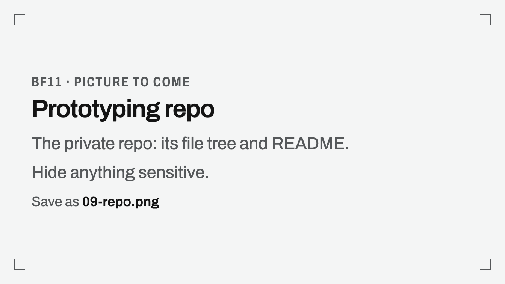
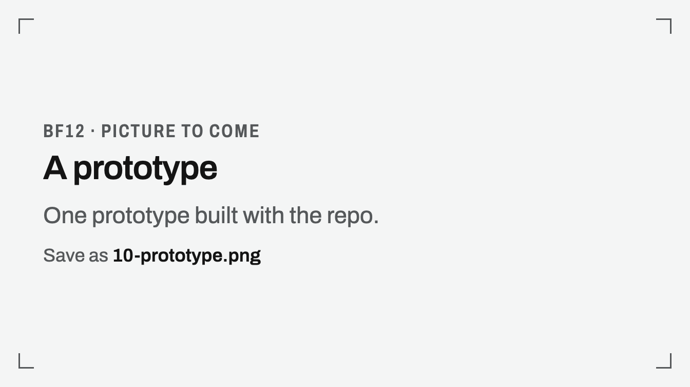
7. Shipping my own code
Getting set up
- Repo access came through IT and engineering leadership.
- An FE developer helped me set up the editor, GitHub CLI, Claude Code and a dev environment.
What I shipped
- 2 merged PRs, reviewed by the FE lead and other FE reviewers:
- accordion interactions
- the order of action menu items
- wrong icons replaced
- dynamic browser page titles on a couple of pages
How
- Claude Code, with Opus 5.5 and Fable 5.1.
- I read every diff and tested each change in my dev environment.
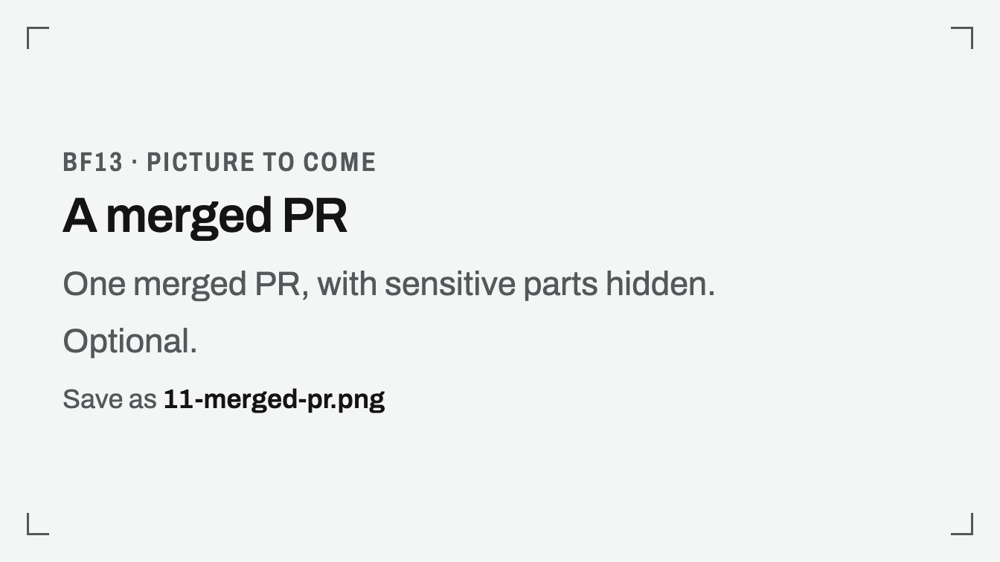
Next (in progress)
- browser page titles for all Test Manager pages
- open the agent input from anywhere with a keyboard shortcut
- show the email on hover over a user name
- create a test run from test cases selected on the listing page
- drag and drop test cases into folders to move or copy them
8. Fixing a flow that had drifted: creating a test run
Why
- The flow was built from designs, but long-term scalability and design critique weren't followed, so its layout drifted.
What I designed (handed to FE in Figma)
- Step 3, "Set configurations and assignee", redesigned.
- Bulk actions: set assignee or configuration for every selected test case at once.
- A clear hierarchy: test case, then its configurations, then each configuration's dataset rows, with an assignee at each level that needs one.
- What's missing, at a glance: warnings on each test case, and a footer with totals for missing configurations and assignees, each with "View all".
- Built for volume: folders, search, filters and pagination for thousands of test cases.
Where it stands
- Live in production: the shipped step keeps the design's folders, search and filters, selection, assignee and configuration for each test case, warnings, and totals.
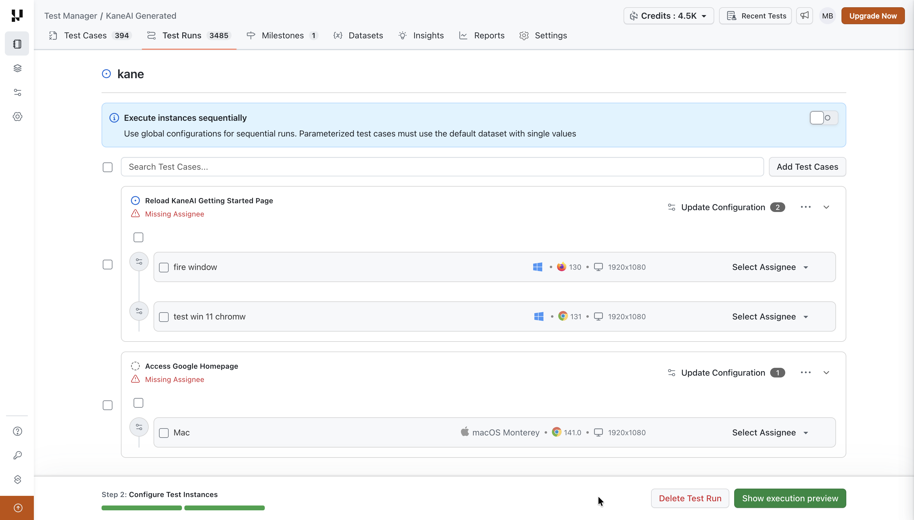
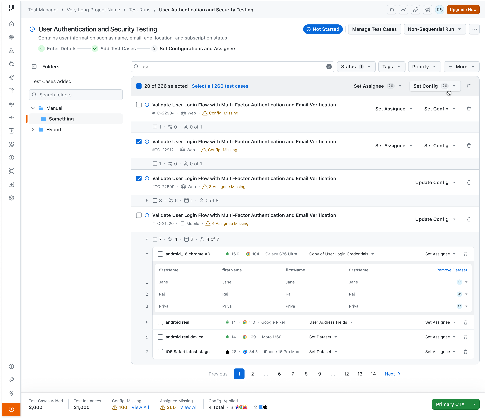
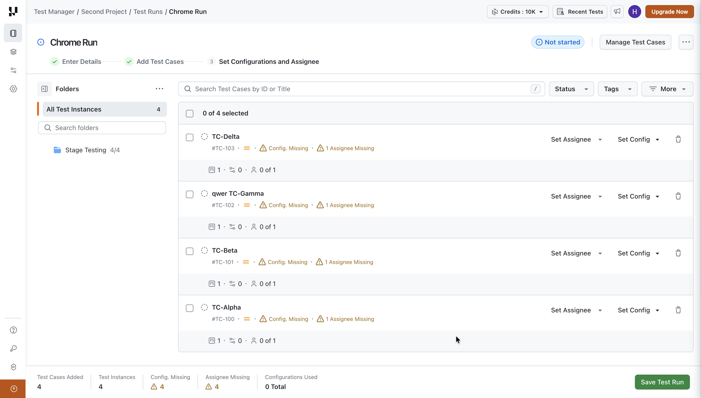
How I used AI
- Decisions stayed mine: what to fix, when, and how much.
- AI did the heavy lifting: prop descriptions, the token JSON, and the repo's sync scripts.
- I checked AI with AI: Opus 5.5 does the work and Fable 5.1 reviews and improves it.
- I didn't trust AI where it failed: I did the Storybook-against-Figma audit by hand.
What it unlocked
- Storybook:
- props from 28% to 97% typed and 0 to 509 documented, with the FE team. FE engineers now use it constantly.
- Tokens:
- 393 in two collections, with three theme modes.
- down from 622 in 5 collections in the old Primer copy
- Dark theme:
- 3 days of design work once tokens existed; engineering spent about a month converting products to the new CSS variables and got to about 90%.
- AI components:
- 3 of 4 standard in the code library, used in 4 products.
- Code:
- 2 PRs merged; 5 more planned.
- Prototyping repo:
- auto-syncs monthly from Storybook; a couple of prototypes built.
Trade-offs: what's unfinished, why, and what's next
1. Still on Primer
- Where it stands
- The product keeps Primer's look, which doesn't match LambdaTest's website
- Why
- Leadership saw a full identity change as too big
- Whose call
- Leadership
2. Tokens not wired to code
- Where it stands
- Figma variables and CSS variables are maintained separately
- What I'd do next
- Make the token JSON the shared source for the CSS variables
3. AI components not reviewed for accessibility
- Where it stands
- Gradients unchecked; shimmer not final
- What I'd do next
- Run the accessibility checks listed under "The first AI components"
4. Light high-contrast not shipped
- Where it stands
- Values ready in Figma
- Why
- Waiting for dark to go fully live
- What I'd do next
- Hand engineering the values as a file
5. No PM using the repo yet
- Where it stands
- A couple of prototypes, built by me
- Why
- I'm improving output quality first
- Whose call
- Mine
Teamwork
- With the FE lead and her team: they applied my docs in Storybook and reviewed my PRs.
- With an FE developer: they set up my dev environment and tools.
- With engineering: they rebuilt the CSS variables product by product for the dark theme.
- How it worked: personal rapport, and a shared sense that this work had waited too long. The only real pushback was on leaving Primer.
Leadership
- Took ownership of a system nobody owned on the design side.
- Set the order of work so each step unlocked the next: tokens first, then components and themes.
- Turned Storybook into a working tool that FE engineers now use every day.
- Wrote guardrails for AI coding tools, not just for people.
- Argued for our own visual identity, though leadership said no.
Learnings
- Foundations decide the speed of everything after. The token rebuild turned the dark theme into 3 days of design work.
- Accessibility can't wait for later. The AI gradients went out before an accessibility review.
- AI does the work; judgement stays with me. I used AI where it was reliable and did the audit by hand where it wasn't.
- A tool needs users, not just features. The repo works, but it only counts once PMs use it.
Let's Talk
Rajat Garg, Human designer powered with AI